拠点配置、図鑑、配合、パルボックス。迷ったらここから選ぶ。
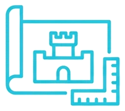
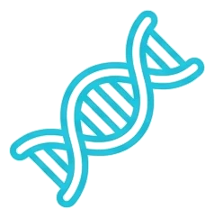
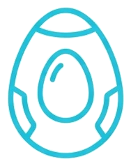
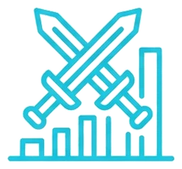
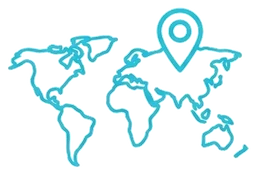
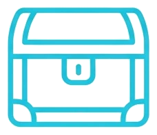
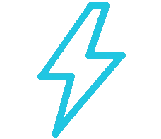
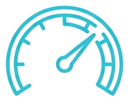
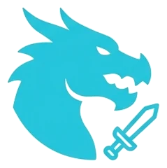
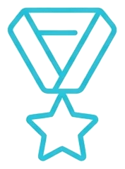
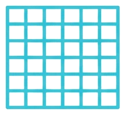
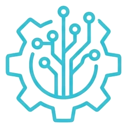
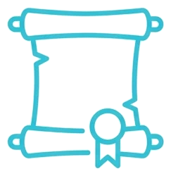
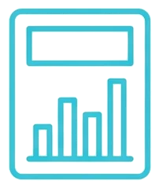
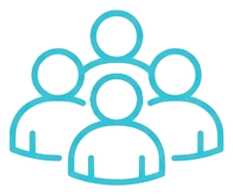
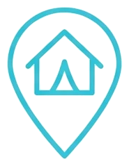
当ツールは『パルワールド(Palworld)』の非公式ファンメイド攻略ツールです。ゲーム内の名称・画像等の権利は © Pocketpair, Inc. および各権利者に帰属します。公式サイト・各プラットフォームのリンクはこちら収録データ: パルワールド 正式版 v1.0(2026-07-11 取得) / サイト最終更新: 2026-08-11